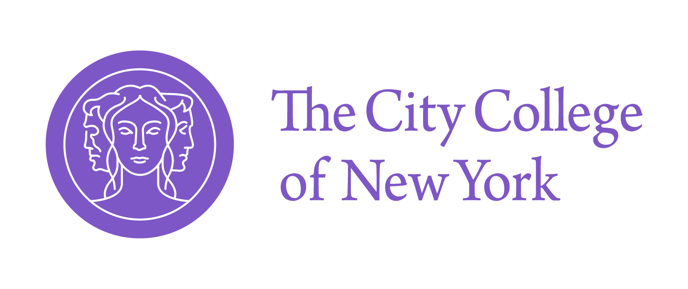
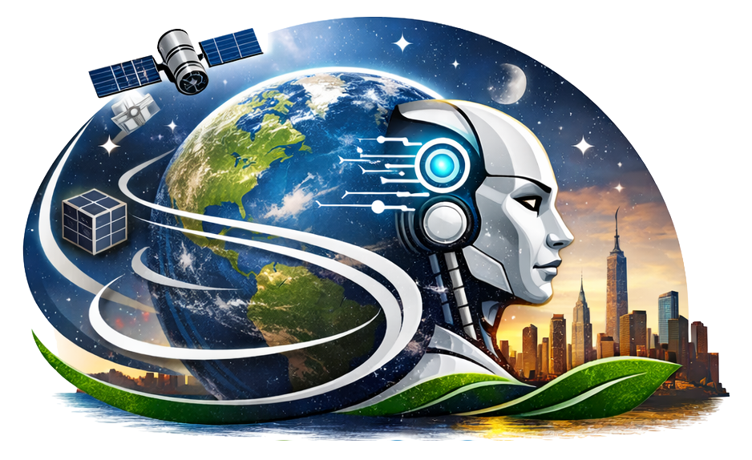

EARS-CONN 2027 — NEW YORK CITY — JANUARY 19–22, 2027 — Embodied AI and Remote Sensing for Sustainable, Safe Connected Cities EARS-CONN 2027 — NYC — January 19–22


EARS-CONN 2027 — NEW YORK CITY — JANUARY 19–22, 2027 — Embodied AI and Remote Sensing for Sustainable, Safe Connected Cities EARS-CONN 2027 — NYC — January 19–22Apply with a short questionnaire—no PDF required. Selected teams pitch on the Day 2 Innovation Stage for the EARS-CONN Prize. Abstracts and short papers for the poster session stay on the Short Papers page.
EARS-CONN challenges you to show how smart sensing—from satellite remote sensing and mobile sensors to embodied-AI robotics and quantum sensing—supports urban sustainability for air, water, and land systems.
Support for selected teams: up to $5,000 to advance the idea, plus mentoring and access to CUNY CREST / NOAA-CESSRST resources where a strong fit exists.
We seek ideas that improve resilient, sustainable urban ecosystems and keep a living Digital-Earth current for better decisions. Priority themes include urban sustainability, climate and hazard risk, and closing the precision gap between satellite views and street-level reality with mobile and robotic sensing.
Pick one primary domain: Air, Water, or Land. Then choose up to three technologies your idea relies on, for example satellite / remote sensing, mobile / IoT sensing, ground robotics / embodied AI, aerial robotics / drones, quantum sensing, or data fusion / Digital-Earth platforms.

Dr. Nia René
Innovation Challenge Organizer · Technology Transfer Specialist, NOAA
Nia leads the Innovation Challenge, including applicant review coordination and the Day 2 Innovation Stage.
Submit the questionnaire by December 12, 2026 (11:59 p.m. ET). A review panel shortlists teams for the Innovation Stage on January 20. Selected teams may receive up to $5,000 in support. At least one team member must register for the conference to pitch.
Undergraduate students, graduate students, research labs, and startup companies.
The form asks for a team name.
The pitch is on the Innovation Stage in New York on January 20. At least one team member must register for the conference to pitch.
A review panel shortlists teams. Shortlisted teams are notified by email and pitch on January 20. Selected teams may receive support.
At least one team member must register for the conference to pitch.
No PDF upload. An optional pitch deck or video link is welcome if you have one.